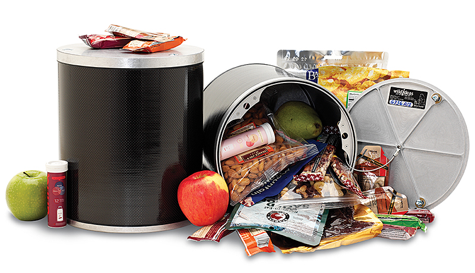

Gear Planning

With a little research on the 10 days of food we were just talking about, it becomes clear that our food is going to be 1.5-1.7 lbs per day depending upon how many calories/day we think we need to carry and how calorie dense our food is. Eeeck. 10 days of food at 1.7 lbs/day is 17 pounds of food. If you think you maybe need one extra day of food for safety, it's almost 19 pounds of food. If you had 23 lbs of other gear and you then add a bear container and water and food, ouch, the pack is at least 45 lbs. That is way too heavy for me. Mild panic. I don't know if I can do that. I don't know if I want to do that. Maybe need to reconsider adding a custom pack mule resupply or something else.
My most recent backpacking experience was when Kevin and I did Whitney 4 years earlier. My pack then was over 50 lbs and it just about killed me. I simply could not enjoy and probably not survive the southern half of the JMT with a pack over 40 lbs. OK, new problem to solve. How to keep my pack to a max of 35 lbs when leaving MTR with 1 liter (2 lbs) of water. That leaves 33 lbs for everything else. If the food was 1.5 x 10 = 15 lbs, that means 18 lbs for all the other gear. As many of you know, I'm an avid photographer and I want to take a good camera/lens on this trip. I'm willing to buy something new that's more optimized for this trip than what I currently have, but my early research says that the camera I want is going to cost me 2 lbs too. So, now I'm down to 16 lbs for all the rest of my gear. That sounds difficult. Let's figure out what's doable.
The big four in gear for a trip like this are pack, tent, sleeping bag and bear container. I have a pack, tent and sleeping bag already. The tent is clearly too heavy (it's a two-person tent that weighs 6 lbs all by itself) so it's clear I'll need a new tent. I have a bear container from a previous trip, but it won't hold 10 days of food, so it's clear I need a new bear container. Let's start with that.
Bear Container
When you look into approved bear containers for a trip like this, there are three main alternatives and you can rent or buy.
| Type | Capacity (cubic inches) | Weight |
|---|---|---|
| Garcia | 614 | 2lbs 12oz |
| Bear Vault (BV500) | 700 | 2lbs 9oz |
| Wild Ideas Bearikade Expedition | 900 | 2lbs 4oz |
The choice turns out to be pretty easy here. I own a Bear Vault and don't think I can get 10 days of food in it. I think I either would need multiple bear containers or something larger. The Garcia is even smaller and the heaviest of all the choices.
The Bearikade is made of carbon fiber with aluminum endcaps and it's both larger and lighter. And, you can rent them rather than buy. There's a discount for through hikes like the JMT so the whole thing will cost about $55 to rent. OK, let's rent a Bearikade. Oh, but there goes 2lbs 4oz of our weight budget already. While we technically only need a container that big for the last half of the trip, logistics say that we'll just be using that container for the whole trip (lots of extra space in it for the first half of the trip). When I read about other's experiences, they say that you "can" get 10 days of food in the Bearikade if you plan appropriately and squish the hell out of things when packing the container.
So, here's one of the gotchas on the trip. We're renting the Bearikade and it won't arrive until a few days before the trip. Our resupply containers for MTR (where the 10 days of food gets shipped to) have to be sent off a few weeks before the trip. Guess what. We're never going to be able to actually see if our specific 10 days of chosen food fits in the bear container before the trip. We're going to have to plan food volume really, really carefully and perhaps have a contingency plan if 1-2 days of food won't fit when we actually go to shove it all in there at MTR. Hmmm, should we reconsider having that pack mule resupply? And, only have to carry two segments of 5 days of food in the southern half of the trail rather than one 10 day segment with a smaller bear container? Boy, lots of other things (besides the delivery logistics) sure would be easier that way. Oh well, let's push on assuming 10 days of food and see where it leads.
Here’s what the Bearikade looks like and it gives you a bit of an idea on the size. I will have to get 10 days of foot in there along with any other supplies that have scent (like sunscreen).


The Big Three in Gear
The remaining big three in gear are the tent, sleeping bag and pack. I have a pretty nice pack I bought four years earlier for the Mt. Whitney trip. I have a pretty nice and very warm down sleeping bag I bought for that same trip. They're both expensive items that I'd like to not have to replace, but when I start researching ultra-lightweight backpacking, I immediately find out that neither my pack or sleeping bag are as light as they probably should be. Ouch, let's try to plan with the items I have and see where that leads. I do need a new tent - that is completely obvious.
When you get really serious about ultra-lightweight backpacking, you find that many of the options are small, mom and pop online stores that make and sell smaller volumes. You don't find this stuff at REI.
There are a number of different options for pretty light shelters. The most popular single person shelter I saw on the JMT is a shelter made of Sil Nylon by Tarp Tent and called the Contrail. It's bug proof (when zipped up), weighs 24.5oz and cost $199. A more expensive option is the Zpacks Hexamid Solo. It's also completely bug proof and is made of cuben fiber (a lightweight, very strong waterproof material that doesn't have to be treated to be waterproof). Both of these are called tarp tents because they really consist of a tarp covering a ground cloth, but both have options for fully enclosed bug netting. The ground cloth has small sides so that water flows under the ground cloth, not onto it.
The ZPacks Hexamid Solo weighs 16oz and costs (gulp) $430. I can see from some research that both these tarp tents are used on major through hikes so they seem to do the job. OK, now we're into the meat of tradeoffs. How much will you pay to save 8.5oz? Since it seems like I'm seriously in the hole on weight, I decide to buck up and get the Zpacks Hexamid Solo. It has endorsements by people who have done the JMT, the PCT (Pacific Crest Trail) and the AT (Appalachian Trail) so it seems like a safe bet. I order one. OK, I've saved a ton of weight over my previous tent so I'm at least heading in the right direction.


My 65 liter Osprey pack weighs 3.5lbs. It's an appropriate size and quite comfortable, but 3.5lbs is not ultra-lightweight. An ultra-lightweight pack would be in the range of 1-1.5 lbs. Ouch. I don't really want to spend on a new pack. ZPacks is again an option for a lightweight pack.
My down sleeping bag is 3 lbs. It compresses nice and small, but an ultra-lightweight bag would weigh more in the 1.5 lb range. The tradeoff with a down sleeping bag is the temperature range it's rated for and the durability of the covering and batting that holds the down in place. I bought this bag only a few years before and it's rated for survival to 20 degrees and comfort to 32 degrees. The lighter weight bags aren't rated for as low a temperature and the construction isn't quite as durable. If it gets cold when you have a lighter weight bag, you have to bulk up with all your clothes in order to stay warm. That means you may have to wake up in the middle of the night and put on more clothes. The downside (pun intended) of my 20 degree bag is that it's going to be hot when it's not very cold out.
I decide that for now, I'll plan to keep both the pack and the sleeping bag and see how ultralight I can go with everything else and where that leaves my total weight. It's relatively easy to switch out the sleeping bag in the last few weeks before the trip, not so easy to switch out the pack as you need to know that your pack fits and is comfortable with the carry weight in it and that you have all the right volume to carry things.
The other part of sleeping is some sort of pad to go under the sleeping bag for both insulation and comfort. I know from previous trips that I really like inflatable pads not just foam pads. I already own a Big Agnes Air Core long size (1 lb 7oz). It's durable, rolls up very small and works for me. But, once again, it's not as light as it could be. The current lightweight leader here is the Therm-a-Rest NeoAir XLite regular length which weighs 12oz. That's an 11oz difference (almost 3/4 of a pound). I'm going to need that savings to I order the NeoAir XLite. The biggest drawback of the NeoAir XLite is that it's thin and can puncture much more easily than the Big Agnes Air Core. Both come with a patch kit if it springs a leak.
OK shelter and sleep are tentatively taken care of. I decide to add a 1 oz Therm-a-Rest Ultralite Pillow Case that I can stuff my jacket into and use for a pillow. Seems like a nice comfort for 1 oz (it turns out to work out great).